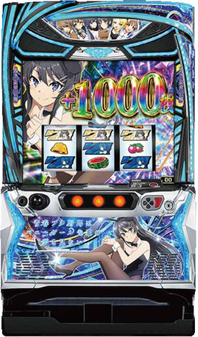

目次

L青春ブタ野郎はバニーガール先輩の夢を見ないAOBUTA ｜ オリンピア（OLYMPIA）
青春ブタ野郎 スペック・機械割
AT初当たり確率・機械割
| 設定 | AT初当たり | 機械割 |
|---|---|---|
| L | — | — |
| 2 | 1/350.8 | 98.1% |
| 3 | 1/336.5 | 99.3% |
| 4 | 1/295.1 | 105.3% |
| 5 | 1/274.6 | 108.4% |
| 6 | 1/207.8 | 110.3% |
設定Lは下パネル消灯で判別可能。設定1は非搭載です。
期待収支（1日8,000G消化時）
| 設定 | 等価 | 5.6枚交換 |
|---|---|---|
| 2 | -456pt | -1,125pt |
| 3 | -168pt | -807pt |
| 4 | +1,272pt | +528pt |
| 5 | +2,016pt | +1,187pt |
| 6 | +2,472pt | +1,590pt |
青春ブタ野郎 小役確率
小役確率は現在解析待ちです。導入後に判明次第更新します。
| 項目 | 値 |
|---|---|
| コイン持ち | 約31.5G/50枚 |
青春ブタ野郎 設定判別ポイント
下パネル消灯チェック
下パネルが消灯していれば設定L確定。設定2以上は点灯しています。最初に必ず確認しましょう。
AT初当たり確率
設定2（1/350.8）〜設定6（1/207.8）で約69%の差。特に設定6は突出して軽くなります。
設定示唆演出
詳細は解析待ちです。導入後に判明次第更新します。
青春ブタ野郎 天井・リセット
| 項目 | 内容 |
|---|---|
| CZ天井 | 560G+α → CZ当選 |
| ボーナス天井 | 899G+α → ボーナス当選 |
| 設定変更後天井 | 699G+α（ボーナス天井短縮） |
青春ブタ野郎 AT詳細
通常時の流れ
「思春期ポイント」を最大1,000ptまで蓄積、または「かえでスタンプ」を7個集めてCZ・ボーナスを目指します。
不可思議モード（6種類）
| モード | 効果 |
|---|---|
| 古賀朋絵 | 規定ポイント100pt |
| 豊浜のどか | アオハルCHANCE報酬優遇 |
| 双葉理央 | 高確率アオハルCHANCE |
| 桜島麻衣 | 規定ポイント500pt以内 |
| 梓川かえで | かえで出現CZ |
| 牧之原翔子 | 翔子出現CZ |
CZ「エピソードチャンス」
前半10G+後半6G+α。期待度約60%OVER。前半でG数上乗せ・ボーナス抽選、フリーズでボーナス濃厚。
青春BONUS（初当たり）
ベルナビ回数管理（5回 or 25回）。消化後は必ずメインST「青ブタJUDGE」へ。
メインST「青ブタJUDGE」
| 項目 | 内容 |
|---|---|
| 継続G数 | 1セット8G+α（2G×4ヒロイン） |
| 方式 | 完走型ST（ボーナス獲得後もG数消化継続） |
| ボーナス2回後 | 必ず牧之原翔子登場（上位ST-CZ獲得） |
| ボーナス7回後 | 全て牧之原翔子 |
（超）青春DREAM BURST
| ヒロイン | 青7時 | 白7時（超） |
|---|---|---|
| 梓川かえで | 約380枚 | 約650枚 |
| 牧之原翔子 | 約220枚+上位ST-CZ | 約820枚 |
上位ST「∞（インフィニティ）の夢を見る」
| 項目 | 内容 |
|---|---|
| 継続率 | 約80% |
| 期待枚数 | 約3,100枚 |
| 特徴 | 全ボーナスが（超）青春DREAM BURSTに昇格 |
有利区間
コンプリート機能：差枚最低点から19,000枚獲得で打ち止め。
青春ブタ野郎 打ち方
通常時
順押しまたはハサミ押し。左リール上段にBARを狙うことで小役フォロー可能。押し順ナビ発生時はナビに従ってください。
やめどき
ボーナス・AT終了後、有利区間リセットを確認してから即やめが基本。設定変更後はボーナス天井が699G+αに短縮されるため朝一は有利です。
設定判別ツール
AT初当たり回数・総回転数を入力して設定を推測できます（設定L,2,3,4,5,6）。
青春ブタ野郎 よくある質問
L青春ブタ野郎の設定6機械割は？
設定6の機械割は110.3%です。設定L・2・3・4・5・6の特殊な設定構成で、設定1は非搭載です。AT純増約8.0枚/Gの高速出玉が特徴です。
青ブタの天井は何ゲームですか？
CZ天井が560G+α、ボーナス天井が899G+αです。設定変更後はボーナス天井が699G+αに短縮されます。
設定Lとは？
設定1の代わりに搭載された最低設定です。下パネル消灯で設定Lを判別できます。設定2以上は下パネルが点灯しています。
青ブタJUDGEとは？
メインSTで、1セット8G+α（2G×4ヒロイン）の完走型STです。全役でボーナス「青春DREAM BURST」を抽選し、ボーナス2回後は必ず牧之原翔子が登場して上位ST-CZを獲得できます。
上位ST「∞（インフィニティ）の夢を見る」とは？
継続率約80%・期待枚数約3,100枚の上位STです。全ボーナスが（超）青春DREAM BURSTに昇格し、大量出玉のチャンスです。
不可思議モードとは？
通常時の内部モードで全6種類あります。桜島麻衣モードは規定ポイント500pt以内、梓川かえでモードはかえで出現CZ、牧之原翔子モードは翔子出現CZなど、モードによって恩恵が異なります。
設定判別で重要な指標は？
AT初当たり確率が主要指標です。設定2（1/350.8）〜設定6（1/207.8）で約69%の差があり、特に設定6は突出して軽くなります。下パネル消灯で設定L判別も重要です。
コイン持ちはどれくらいですか？
通常時のコイン持ちは約31.5G/50枚です。スマスロのためpt管理となります。